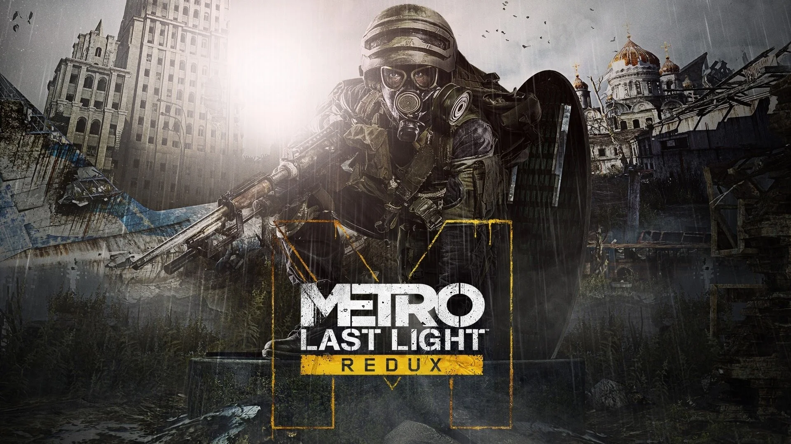
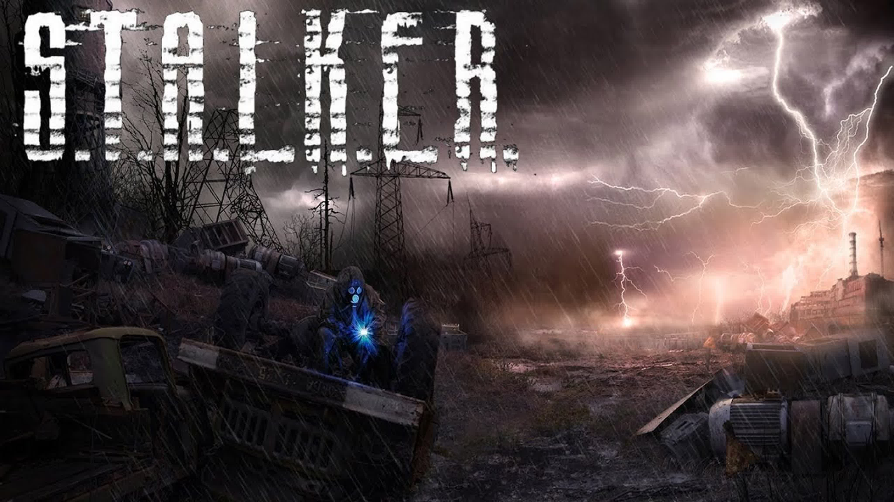

METRO EXODUS
метро исход - это антиутопия про последствия 3 мировой войны 2013 года. Действия игры разворачиваются уже не в метро, а по большей части на поверхности. Артём уезжает за пределы Москвы и узнаёт, что за Москвой есть жизнь.

Half Life 2
халф лайф 2 - это антиутопия, которая разворачивается после 7 часовой войны с Альянсом, это типо инопланетных захватчиков. Они захватывают землю и заставляют жить людей в не лучших условиях и иногда и вовсе делают опыты на них, пытаясь сделать супер солдат. Спустя 10 лет после событий 1 части Гордон Фримен очнулся в вагоне и начинает привыкать к новому мрачному миру.

METRO Last Light
метро ласт лайт - это антиутопия которая является приквелом к метро исход. В этой игре мы воюем с красными и для этого сбегаем из плена фашистов. Но на пути к войне с красными нас приследуют другие неприятности.
S.T.A.L.K.E.R. тень Чернобыля
S.T.A.L.K.E.R. тень Чернобыля - это игра повествующая о жизни станкера с именем Стрелок. Дейстия игры проходят в городе под названием Чернобыль
BLACK MEZA 2020
чёрная меза - это ремастер Half Life 1. События игры проходят в секретной лаборотории в пустыне. Горден Фримен в одном из эксперементов открывает портал в другое измирение и из-за этого в лаборотории появляются много монстров. Позже прилетают очень много военных которые нас пытаются убить. В конце игры мы и вовсе телепортируемся в другой мир.